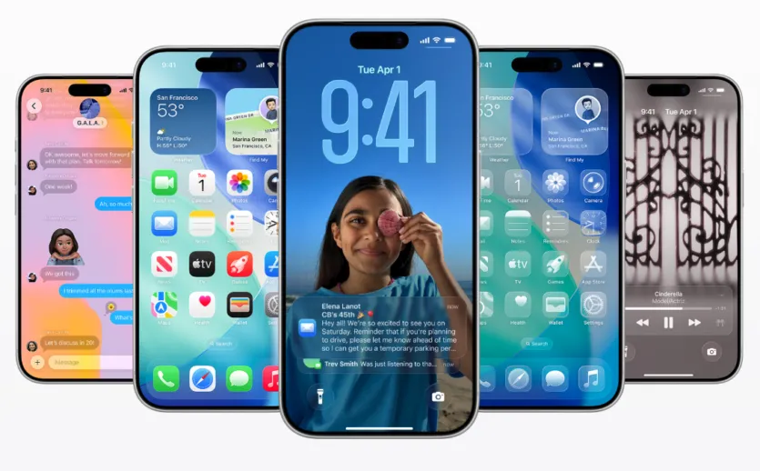
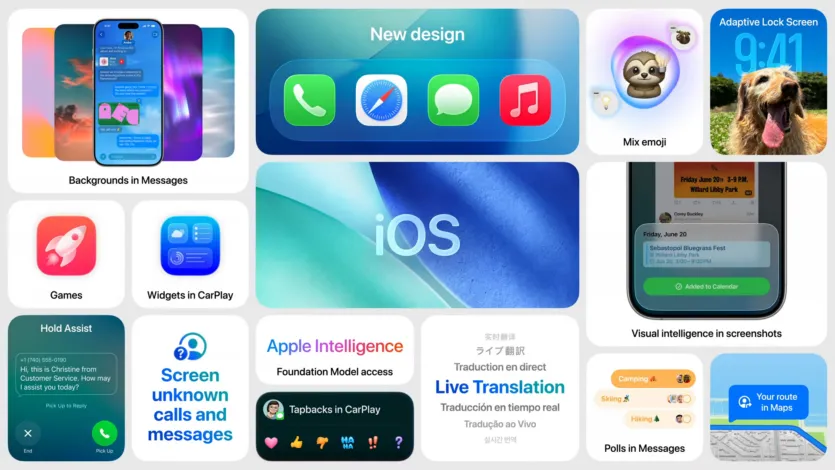
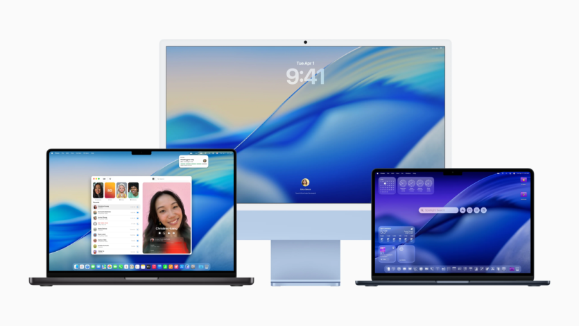
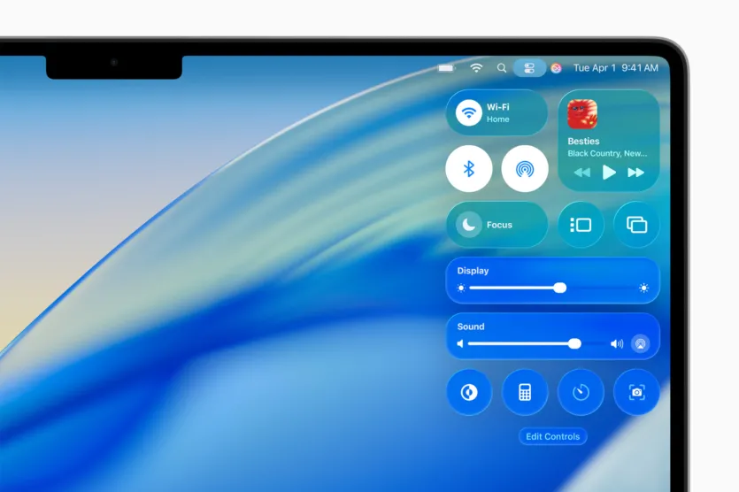
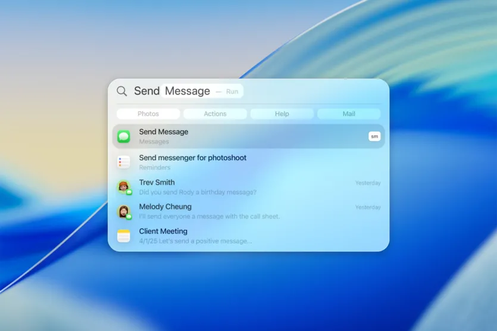
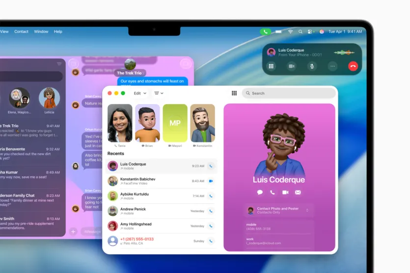

iOS 26
Найбільше оновлення програмного забезпечення iPhone з часів iOS 7 у 2013 році. Окрім нового дизайну, iOS 26 оновлює основні програми та розширює можливості ШІ Apple Intelligence.
Редизайн Liquid Glass
- Зображення всіх панелей заломлюються та відображають те, що знаходиться під ними, створюючи динамічний ефект, який надає глибини екрану блокування, значкам програм, центру керування та системним програмам.
- Оновлено екран блокування: годинник автоматично масштабується, щоб залишатися на видноті разом зі сповіщеннями, а фотографії можуть трансформуватися у просторові сцени з ледь помітною 3D-глибиною під час переміщення пристрою.
- Обкладинки альбомів в застосунку “Музика” можуть анімуватися за елементами керування відтворенням, а значки програм тепер пропонують більше можливостей персоналізації завдяки світлим, темним, тонованим і прозорим стилям.
- Кожен застосунок, включаючи Камеру, Фото, Safari та FaceTime, перероблено з використанням тієї ж основи Liquid Glass. Safari представляє новий дизайн плаваючих вкладок, а FaceTime отримує оновлену цільову сторінку, яка виділяє нещодавні контакти за допомогою анімованих плакатів та відеопрев’ю.
Apple Intelligence
- Відтепер ШІ може аналізувати все, що відображається на вашому екрані, при цьому додаючи події в Календар, перекладаючи текст і подібне. Опція Image Playground дозволить генерувати зображення, а Genmoji на базі штучного інтелекту зможе поєднувати емодзі з текстовими описами або налаштовувати персонажів, натхненних людьми з вашої бібліотеки фотографій.
Основні програми
- Програма Телефон отримала єдиний макет, який об’єднує розділи “Вибране”, “Недавні” та “Голосову пошту”. З нових функцій: фільтрація дзвінків та утримання
- Повідомлення тепер пропонують динамічні фони для розмов, опитування в реальному часі та покращену фільтрацію спаму. У групових чатах відображаються індикатори введення тексту для кожного учасника, а також інтегровано Apple Cash для швидких платежів.
- Фотографії розділяють Бібліотеку та Колекції на окремі режими перегляду з опціями налаштування та захопливими просторовими фотоефектами. Камера додає оптимізований макет, елементи керування швидким доступом і навіть підтримку дистанційного керування для AirPods.
- Карти вивчають ваші улюблені маршрути та зберігають місця, які ви часто відвідуєте, для швидкого відтворення
- Apple Music додає переходи AutoMix, переклад текстів пісень та закріплені обрані елементи.
- Ігри отримали абсолютно новий застосунок Apple Games, який централізує вашу бібліотеку, досягнення, випробування та контент Apple Arcade. Функція Game Overlay тут дозволяє налаштовувати параметри або спілкуватися в чаті, не виходячи з гри.
- Решта оновлень включають можливість запису високоякісного аудіо за допомогою AirPods, підтримку Markdown у Нотатках, покращені будильники в Годиннику, приблизний час заряджання в Батареї тощо.
iOS 26 сумісна з iPhone 11 і новішими та iPhone SE (2-го покоління та пізніших). Для функцій Apple Intelligence потрібні моделі iPhone 16/17/Air або iPhone 15 Pro та Pro Max.
macOS Tahoe 26
Як і в попередній ОС, дизайн Liquid Glass став головною зміною в macOS Tahoe, разом із пропозицією кількох давно запитуваних функцій.
Ключові оновлення
- Нарешті з macOS Tahoe 26 користувачі можуть додавати віджети на робочий стіл. Вони, очікувано виконані в дизайні Liquid Glass, як і віджети Центру сповіщень. Додавати віджети можна як з рідних, так і зі сторонніх програм.
-
macOS Tahoe 26 тепер містить функцію Центру керування, доступ до
якої можна отримати з рядка меню. Як і в iOS та iPadOS, ви можете
налаштувати, які елементи керування ви хочете там бачити, а також їх
розташування та скільки місця має займати кожен елемент.
 -
Spotlight отримав значне оновлення з покращеним пошуком і можливістю
виконувати сотні дій без необхідності відкривати програму.
 - Швидкі команди з функціями Apple Intelligence, які можуть спростити повсякденні дії, такі як написання та надсилання текстових повідомлень і електронних листів, використання комбінацій клавіш тощо. А завдяки автоматизації на Mac ви можете налаштувати автоматичне виконання швидких команд на основі таких умов, як час доби, оновлення файлів або тек, підключення до зовнішнього монітора тощо.
-
Нові програми: користувачі можуть керувати дзвінками з нового
вбудованого додатка, а не просто відповідати на них; також з’явився
застосунок Apple.

Сумісність: всі Mac з Apple Silicon, MacBook Pro 2019-2020, iMac 2020 і новіші, та Mac Pro 2019 і новіші.